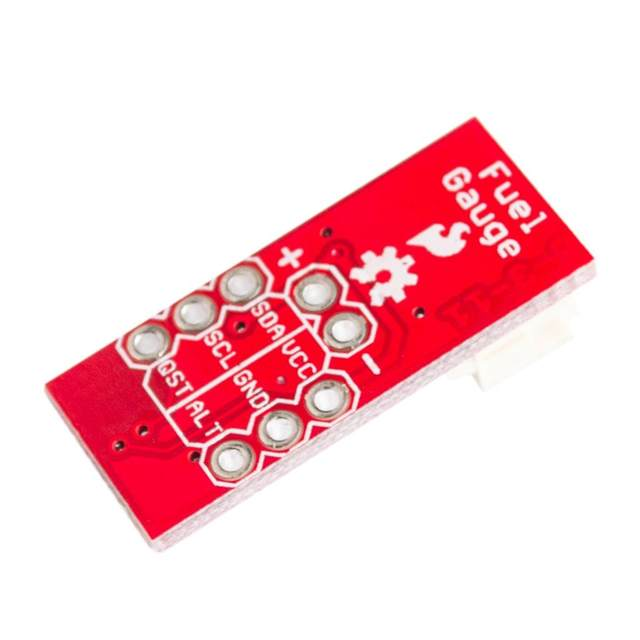
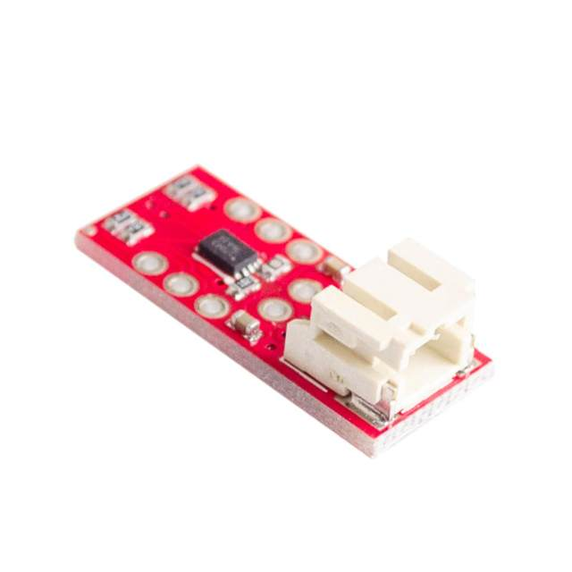
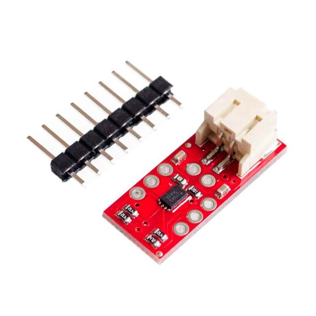

LiPo batteries are a great way to power your projects. They're small, lightweight, and pack a pretty good punch for their size. Unfortunately, even the best batteries eventually run low on power and when they do it's often unexpected (and at the worst time). Don't be caught by surprise next time your board suddenly powers-down! The LiPo Fuel Gauge connects your battery to your project and uses a sophisticated algorithm to detect relative state of charge and direct A/D measurement of battery voltage. In other words, it tells your microcontroller how much fuel' is left in the tank. The LiPo Fuel Gauge communicates with your project over I2C and an alert pin also tells you when the charge has dropped below a certain percentage.
Features:
Documents:


